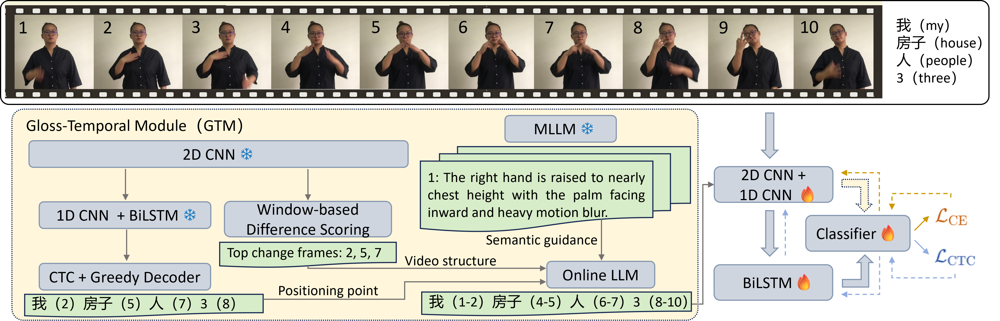
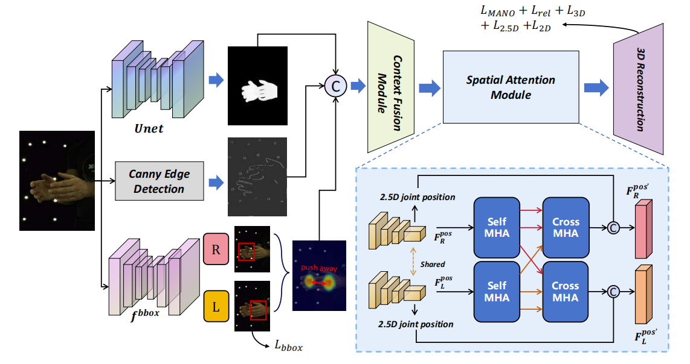
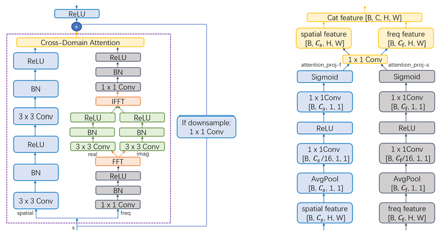

🪪Self-Intro
Hi there! My name is Junfeng Zhu (朱俊枫).
I am currently a Master's student pursuing an academic degree in Computer Science and Technology at the School of Computer Engineering and Science (CES), Shanghai University (SHU), holding a Bachelor's degree in Artificial Intelligence from SHU.
My interests lie in Computer Vision, Agent Application, Multimodal Large Language Model, and Data Analysis, under the supervision of Professor Yuchun Fang (方昱春), a recipient of the 2024 Baogang Outstanding Teacher Award.
⏰Timeline
- - 📖2026.09~Present | Master's in CS, School of CES, Shanghai University;
- - 📖2022.09~2026.06 | Bachelor's in AI, School of CES, Shanghai University, GPA: 3.57/4.
🗞️Papers and Patents



💻Internships and Projects
- 2026.07~2026.08 | AI Application Engineer at OriginCell Technology Group Co., Ltd.:
· Built a Text-to-SQL query service with workflow orchestration using FastAPI and OpenAI SDK;
· Built a LangGraph-based Agentic RAG system on equipment manuals to deliver traceable Q&A;
· Built a MobileNet binary classifier to pre-filter coded wells with RKNN deployment on RK3568;
· Built an warning system using YOLO and Java OpenCV for sample drop and mechanical error on Android.
- 2024.07~2024.08 | Quantitative Engineer at Shanghai JiuQianYi Software Co., Ltd.:
· Developed TWAP strategy code using C++ and gained exposure to multi-factor stock selection;
· Automated trade position monitoring via Python callbacks with WeChat notifications;
· Processed decades of tick data across exchanges using Python to facilitate backtesting.
- 2026.08~2026.09 | Personal-Decision Multi-Agent Application (personal project):
· Built a Plan-and-Execute workflow with incremental Replan using OpenAI SDK and task DAGs;
· Built ReAct agents with MCP tools, LLM-as-Judge, self-evolving skills and constrained delegation;
· Designed a three-level memory system using SQLite and Qdrant;
· Built a FastAPI + React + Vite application with SSE-based real-time trace visualization.
- 2026.05~2026.06 | Multi-role Werewolf Agent Application (personal project):
· Developed a multi-agent Werewolf app using LlamaIndex OpenAILike and custom agent orchestration;
· Designed public/private message passing and memory management mechanisms;
· Implemented structured LLM outputs with Pydantic validation and fallback handling;
· Built concurrent voting and PK resolution logic using ThreadPoolExecutor;
· Developed a Flask-based visualization frontend;
- 2024.03~2024.05 | Undergraduate Innovation and Entrepreneurship Project at SHU:
· Developed a knowledge-graph based diagnosis Question-Answering system;
- 2023.09~2023.12 | Undergraduate Innovation and Entrepreneurship Project at SHU:
· Developed an app "WhatToEat" by using HarmonyOS-3.1 (API9) & ArkTS;
🥇Awards and Honors
- - 2026.08 | Public rank 17/571 (Top 3%), Kaggle - Autonomous Agent Prediction Beta (Leaderboard);
- - 2025.05 | Meritorious Winner, COMAP Mathematical Contest in Modeling (Leaderboard);
- - 2025.04 | Third Prize, Huawei Software Elite Challenge (Leaderboard);
- - 2024.08 | Success Award, Asia and Pacific Mathematical Contest in Modeling - Chinese Event (Leaderboard);
- - 2024.06 | Award of Excellence, 'Huawei ZhiLian Cup' Wireless Programming Competition (Leaderboard);
- - 2024.06 | Internet Platform Development Engineer Certification, Ministry of Industry and Information;
- - 2024.05 | Third Prize, 'LanQiao Cup' Shanghai Division - C/C++ University Group A.
- - 2026.06 | SHU Outstanding Undergraduate Thesis (Project);
- - 2026.05 | SHU Outstanding Resume Design Award;
- - 2026.04 | SHU Outstanding Graduate (Undergraduate);
- - 2025.11 | SHU Academic Scholarship & Self-Reliance Scholarship & Innovation Scholarship;
- - 2025.02 | SHU Outstanding Student Award;
- - 2024.12 | SHU Academic Scholarship & Self-Reliance Scholarship;
- - 2024.10 | Chinese Software Developer Network (CSDN) Hot-List Author.
🎉News
- 2025.12 | As the sole student representative of SHU, participating in the Huawei Shanghai-Hefei Region HarmonyOS University Talent Exchange Forum.
- 2025.10 | Recommended admission with waiver of entrance examination to the School of Computer Engineering and Science, Shanghai University, to pursue a Master's degree in Computer Science and Technology.
- 2025.06 | Presented a poster in-person at CVIPPR 2025, held in Xiamen, China, June 6–8, 2025.
🙃Something Else
- - CET 4: 632;
- - CET 6: 581;
- - Mandarin Proficiency Test: Level 2-B;
- - Technical skills: Python, Pytorch, LangGraph, C++, SQL, HTML, JAVA, git, Docker, VSCode, Codex...;
- - Original content (technical sharing, study notes, course design) on CSDN blog has garnered over 180,000 views;
- - Data contributior for "Tobii Eye Tracking" & "EEG Word-Type Judgment" at SHU Brain-Like Computing Lab;
- - Volunteer for the 48th ICPC Finals (Asia Region);
- - 2026 College Graduate Student Union Secretary Dept. Member;
- - 2026 Student Dorm Management Committee Member;
- - Peer mentor for the 2023 undergraduate students of the school of CES, SHU;
- - Operator of 2023-2025 SHU's QQ Universal Wall;
- - Participant to the 2nd session of Fudan's High School Camp (The Convergence of AI & Philosophy);
- - Travel、Sports、Honor of Kings....